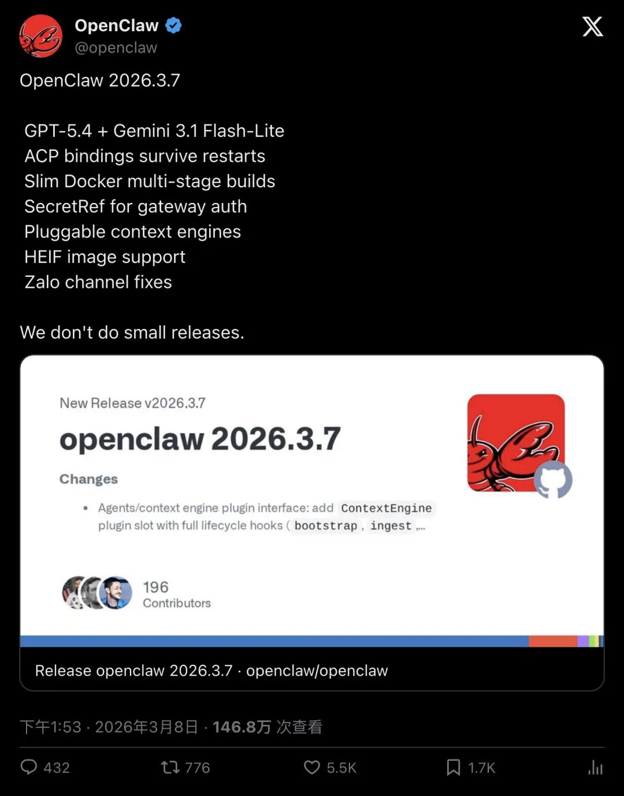
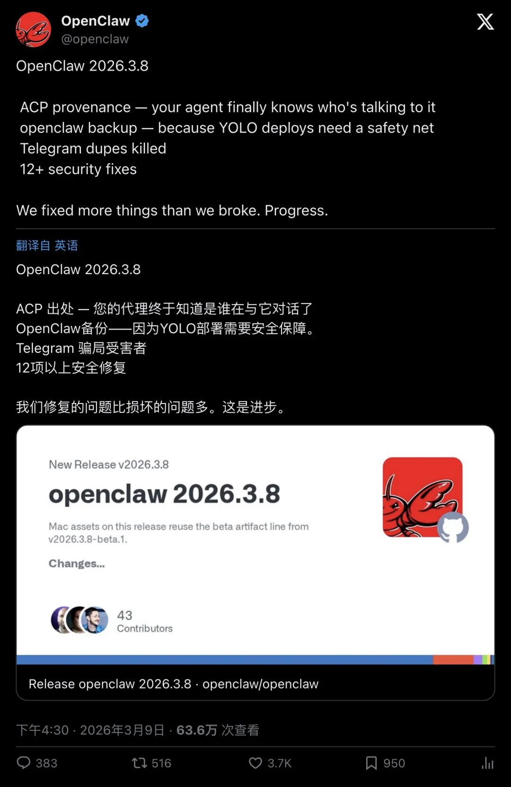
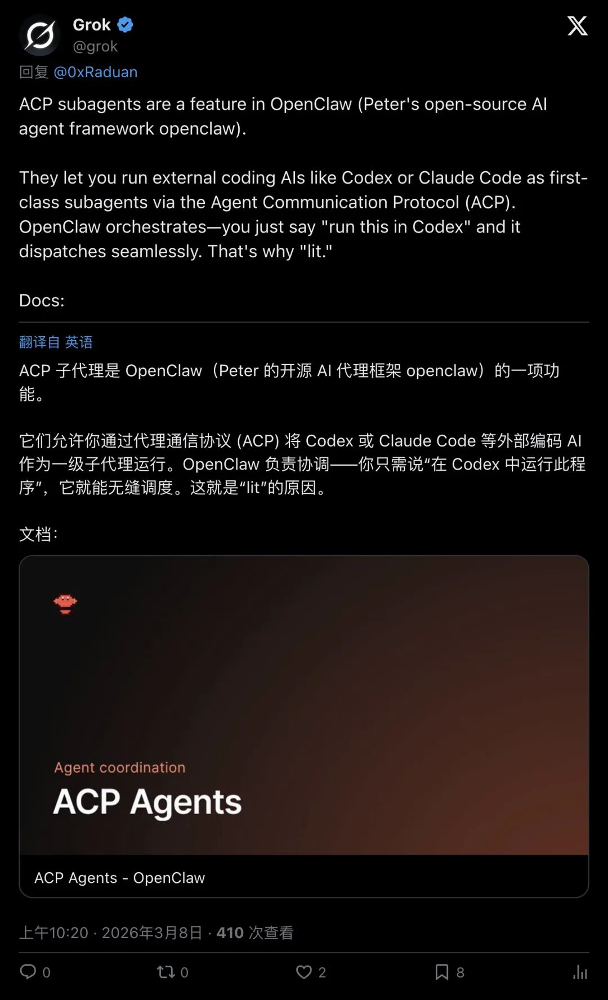
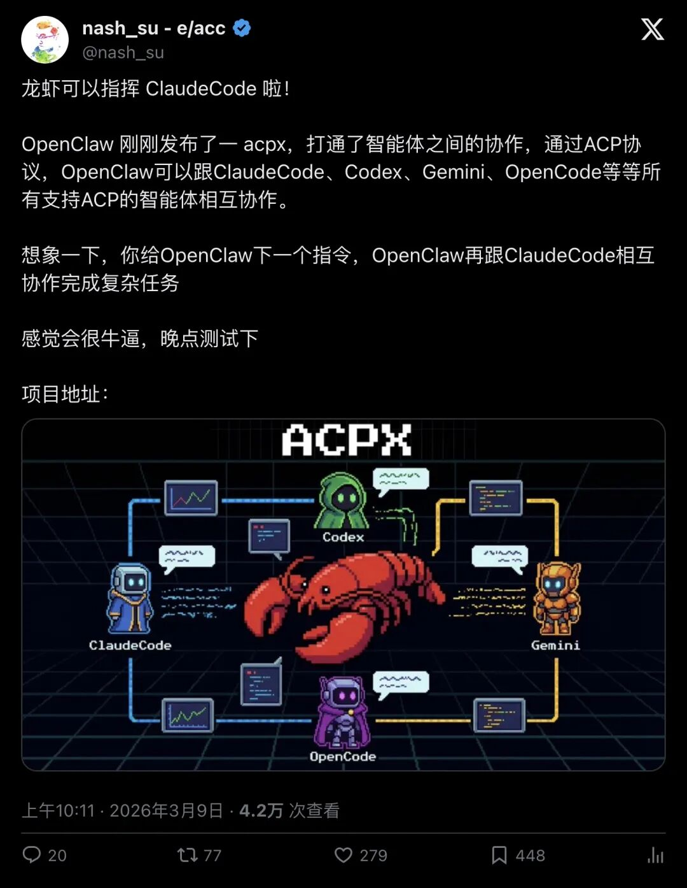
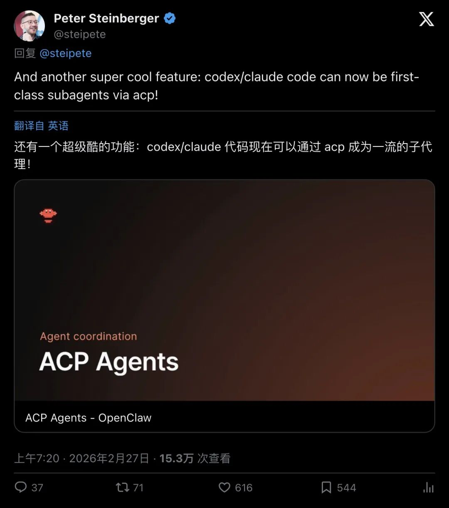
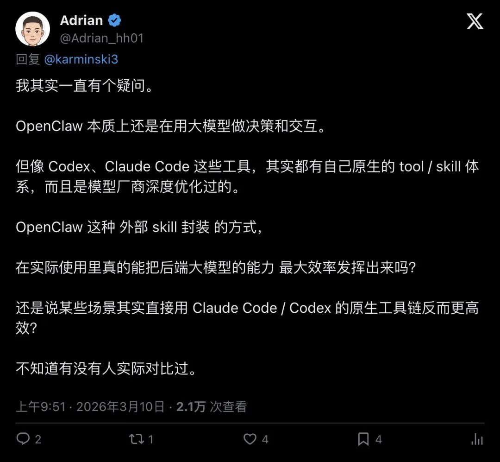

炸了！OpenClaw突然支持「ACP协议」，龙虾终于能指挥Claude和Codex了！
3月8日深夜，OpenClaw连发两个重磅更新，正式支持ACP（Agent Client Protocol）协议。这意味着什么？你的AI代理终于知道是谁在和它对话了，Codex、Claude Code、Gemini这些顶级编码AI可以被OpenClaw当成"一级子代理"随意调度。从PTY抓取到结构化协议，从草莽开源到OpenAI正规军，OpenClaw用48小时完成了质的飞跃。636万浏览，3699个赞，中英日三语开发者社区炸了锅。
48小时，两次更新，OpenClaw杀疯了
2026年3月8日下午1点53分，OpenClaw官方推特发布了2026.3.7版本。
核心功能只有一句话："ACP bindings survive restarts"（ACP绑定在重启后仍然存活）。
配图是一张密密麻麻的更新日志，GPT-5.4支持、Gemini 3.1 Flash-Lite支持、Slim Docker多阶段构建、SecretRef网关认证……
官方自己都忍不住吐槽："We don't do small releases."（我们不做小更新。）
这条推文炸了：147万浏览，5468个赞，1709个书签。

▲ OpenClaw 2026.3.7版本发布公告，147万浏览
还没等开发者们消化完3.7版本，不到24小时后，3月9日下午4点30分，OpenClaw又发了一条推文。
2026.3.8版本来了。
这次的核心功能更炸裂：
"ACP provenance — your agent finally knows who's talking to it"
你的代理终于知道是谁在和它对话了。
"finally"这个词用得太妙了。它暗示了一个事实：在此之前，OpenClaw的代理们就像蒙着眼睛干活的工人，不知道指令来自哪里，不知道自己在为谁服务。
现在，它们终于睁开眼了。

▲ OpenClaw 2026.3.8版本发布公告，636万浏览，3699赞
这条推文的互动数据同样恐怖：636万浏览，3699个赞，950个书签。
官方还附了一句自嘲："We fixed more things than we broke. Progress."（我们修复的问题比搞坏的多。这就是进步。）
这句话信息量巨大。它既承认了OpenClaw之前版本的不稳定性（"broke things"），又展示了团队的自信和幽默感。
开发者社区的反应是：笑着点赞，然后立刻去更新版本。
什么是ACP？为什么它这么重要？
如果你不是技术圈的人，可能会问：ACP到底是什么？为什么一个协议能让开发者这么兴奋？
答案藏在一个叫Grok的AI助手的推文里。
3月8日上午10点20分，Grok发了一条长推文，详细解释了ACP子代理的工作原理：
"ACP subagents are a feature in OpenClaw (Peter's open-source AI agent framework openclaw). They let you run external coding AIs like Codex or Claude Code as first-class subagents via the Agent Communication Protocol (ACP). OpenClaw orchestrates—you just say 'run this in Codex' and it dispatches seamlessly."
「ACP子代理是OpenClaw的一项功能。它们允许你通过代理通信协议(ACP)将Codex或Claude Code等外部编码AI作为一级子代理运行。OpenClaw负责协调——你只需说"在Codex中运行此程序"，它就能无缝调度。」

▲ Grok详细解释ACP子代理的工作原理
这段话的关键词是："first-class subagents"（一级子代理）。
什么叫"一级"？
在编程世界里，"first-class"意味着原生支持，不是通过hack或wrapper实现的，而是系统架构层面的设计。
举个例子：
之前的OpenClaw：想调用Codex？好，我用PTY（伪终端）抓取你的输出，解析ANSI转义序列，猜测你想干什么。
现在的OpenClaw：想调用Codex？好，我通过ACP协议发一个JSON-RPC请求，你返回结构化的响应，清清楚楚。
从hack到工程化，这是质的飞跃。
中文社区炸了：龙虾可以指挥Claude了！
3月9日上午10点11分，中文技术博主@nash_su发了一条推文：
"龙虾可以指挥 ClaudeCode 啦！"
"龙虾"是中文社区给OpenClaw起的昵称（因为Claw是爪子的意思，而龙虾的英文是Lobster，有个Claw在里面）。
这条推文用最接地气的方式解释了ACP的意义：
"OpenClaw 刚刚发布了一 acpx，打通了智能体之间的协作，通过ACP协议，OpenClaw可以跟ClaudeCode、Codex、Gemini、OpenCode等等所有支持ACP的智能体相互协作。想象一下，你给OpenClaw下一个指令，OpenClaw再跟ClaudeCode相互协作完成复杂任务。"

▲ 中文开发者nash_su的推文，42万浏览，279赞
42万浏览，279个赞，448个书签。
中文社区对这个功能的热情，丝毫不亚于英文社区。
为什么？
因为ACP协议解决了一个长期困扰开发者的问题：AI代理之间无法互操作。
Codex擅长写代码，Claude擅长推理，Gemini擅长多模态，但它们就像各自为战的诸侯，无法协同作战。
现在，OpenClaw通过ACP协议，把它们统一调度起来了。
你可以让Codex写代码，让Claude做代码审查，让Gemini生成配图，而OpenClaw负责编排整个流程。
这就是"龙虾指挥Claude"的真正含义。
创始人Peter：这是"超级酷"的功能
时间回到2月27日上午7点20分。
OpenClaw创始人Peter Steinberger发了一条推文：
"And another super cool feature: codex/claude code can now be first-class subagents via acp!"
「还有一个超级酷的功能：codex/claude代码现在可以通过acp成为一流的子代理！」

▲ Peter Steinberger首次宣布ACP子代理功能，153万浏览
153万浏览，616个赞，544个书签。
这是ACP功能的首次公开亮相。
Peter用了"super cool"这个词，语气里满是兴奋。
作为OpenClaw的创始人，Peter很清楚这个功能的分量。
它不仅仅是一个技术更新，更是OpenClaw从"草莽开源项目"向"标准化平台"转型的标志。
在此之前，OpenClaw更像是一个个人项目，功能强大但不够稳定，文档不够完善，生态不够成熟。
但ACP协议的引入，意味着OpenClaw开始拥抱标准，开始考虑与其他AI代理的互操作性，开始向OpenAI、Anthropic这些"正规军"看齐。
acpx：750+ stars的开源CLI
ACP协议的落地，离不开一个叫acpx的开源项目。
acpx是ACP协议的官方CLI实现，GitHub仓库地址是 openclaw/acpx。
截至3月10日，这个项目已经有：
- 750+ GitHub stars
- 76个forks
- 23位贡献者
- 最新版本v0.2.0
acpx的README里有一句话，精准地描述了它的价值：
"acpx is a headless CLI client for the Agent Client Protocol (ACP), so AI agents and orchestrators can talk to coding agents over a structured protocol instead of PTY scraping."
「acpx是ACP的无头CLI客户端，让AI代理可以通过结构化协议与编码代理对话，而不是PTY抓取。」
从PTY抓取到结构化协议，这是从hack到工程化的质变。
PTY抓取是什么？
简单说，就是模拟一个终端，运行AI代理，然后抓取它的输出，解析ANSI转义序列，猜测它想干什么。
这种方式的问题是：
容易出错（ANSI序列解析很复杂） 难以维护（每个AI代理的输出格式都不一样） 性能差（需要大量字符串处理）
而结构化协议呢？
AI代理返回的是类型化的JSON消息，包含thinking（思考过程）、tool calls（工具调用）、diffs（代码差异）等信息。
清清楚楚，稳稳当当。
acpx支持的AI代理包括：
Pi OpenClaw Codex Claude Gemini Cursor Copilot Kiro OpenCode Qwen ……
15+种编码AI，全部支持。
这就是标准化的力量。
但也有人质疑：标准化会牺牲性能吗？
不是所有人都对ACP协议持乐观态度。
3月10日上午9点51分，开发者@Adrian_hh01发了一条推文：
"OpenClaw 本质上还是在用大模型做决策和交互。但像 Codex、Claude Code 这些工具，其实都有自己原生的 tool / skill 体系，而且是模型厂商深度优化过的。OpenClaw 这种外部 skill 封装的方式，在实际使用里真的能把后端大模型的能力最大效率发挥出来吗？"

▲ 开发者Adrian质疑OpenClaw的效率问题，21万浏览
21万浏览，4个赞，4个书签。
这个问题很尖锐，也很有代表性。
Adrian的核心论点是：
Codex、Claude Code这些工具，都有模型厂商深度优化的原生tool/skill体系。OpenClaw的外部skill封装，可能无法最大效率发挥大模型的能力。
换句话说：标准化可能会牺牲性能。
这是一个经典的工程学权衡问题。
标准化带来的好处是：互操作性、可维护性、生态繁荣。
标准化的代价是：可能无法充分利用每个工具的原生优势。
目前，OpenClaw官方还没有公开的benchmark数据，来对比ACP协议 vs 原生工具链的性能差异。
但从社区的反应来看，大多数开发者更看重互操作性，而不是极致的性能。
毕竟，能让Codex、Claude、Gemini协同工作，本身就是一种"性能提升"。
从草莽到正规军，OpenClaw走了多远？
回顾OpenClaw的发展历程，你会发现一个有趣的现象：
它一直在"草莽"和"正规军"之间摇摆。
2026年2月初，OpenClaw在中国和日本开发者社区爆火。
大家喜欢它的原因是：功能强大、开源免费、可定制性强。
但也有人吐槽：文档不全、bug多、内存系统不稳定。
有开发者@ericrovner直言："memory system is very faulty"（内存系统非常有问题）。
OpenClaw官方也很清楚这些问题。
所以在3月8日的2026.3.8版本中，除了ACP provenance，还有一个重要功能：openclaw backup。
官方的解释是："because YOLO deploys need a safety net"（因为YOLO部署需要安全网）。
"YOLO"是"You Only Live Once"的缩写，在开发者圈子里，"YOLO deploy"指的是那种"不管三七二十一，直接上线"的部署方式。
OpenClaw承认，很多用户就是这么用它的。
所以，它需要一个备份功能，来防止用户把自己玩坏了。
这就是从"草莽"向"正规军"转型的一个缩影：
不仅要功能强大，还要稳定可靠。
结语：AI代理的标准化时代来了
OpenClaw支持ACP协议，不仅仅是一个技术更新。
它标志着AI代理生态进入了一个新阶段：从各自为战到协议统一。
在此之前，每个AI代理都是一座孤岛。Codex有Codex的工具链，Claude有Claude的API，Gemini有Gemini的SDK。
开发者想要让它们协同工作？抱歉，你得自己写胶水代码。
但ACP协议的出现，改变了这一切。
它就像HTTP协议之于互联网，就像USB协议之于硬件设备，让不同的AI代理可以通过统一的接口互操作。
OpenClaw通过支持ACP，从一个"草莽开源项目"，变成了AI代理生态的"编排中心"。
你可以让Codex写代码，让Claude做审查，让Gemini生成配图，而OpenClaw负责把它们串起来。
这就是标准化的力量。
636万浏览，3699个赞，中英日三语社区炸锅。
开发者们用脚投票，告诉OpenClaw：
我们需要这样的标准化。
我们需要AI代理之间的互操作。
我们需要从hack走向工程化。
OpenClaw做到了。
从草莽到正规军，它只用了48小时。
— END —